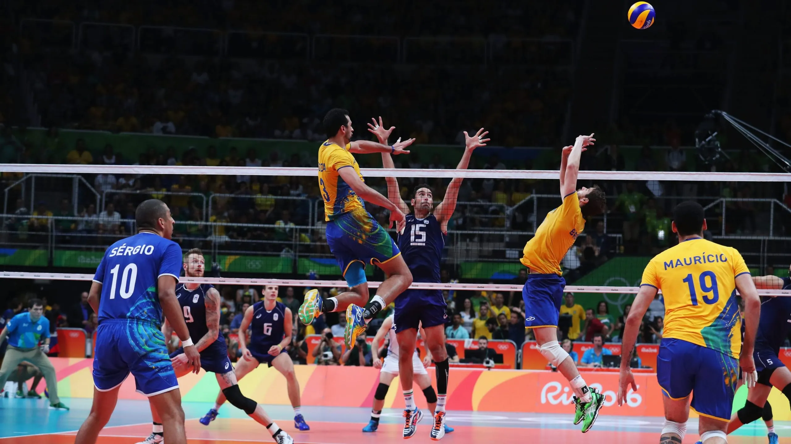

PASATIEMPO Y DEPORTE FAVORITO
Cuando era pequeño, comence a praticar futbol y ejercicio como pasatiempo y aun hoy matengo ese hobby"
y me gusta leer libro porque ayuda a reducir el estres.
PASATIEMPO FAVORITO
La lectura Sentarse a leer nos permite recorrer mundos maravillosos, disfrutar de la historia antigua o transladamos a mundos fantasticos sin movernos de nuestra silla , pero el mundo moderno ha delado los lbros de ladp, dejando todo centado a lo que los medios electronicos pueden ofrecer, por lo que salir a leer un libro sera un cambio competo en nuestra rutina. Cuando se trata de elegir actividades para descansar muy pocas personas comtemplan entre las posibilidades a contemplar, la lectura. pero la lectura como pasatiempo de placer y disfrute, se ha olvidado. La actualidad hay quienes afirman que ya no se lee y otras corrientes de oensadores y analistas sostienen en cambio, que la lectura no se ha olvidado, sino que lo que ha cambiado son los habitos y los intereses de lectura.
Descripcion del deporte  Los seis jugadores de un equipo de voleibol comprenden tres atacantes, que estan cerca de la red, y tres desfensores. El jugador que comienza sirviendo se situa detras del tercio derecho de la linea trasera de su campo y sirve por encima de la red al campo contrario, lanzado la pelota al aire y golpeandola la pelota atras y adelante por encima de la red, con las manos, muñecas, antebrazos, cabeza, o cualquier parte de cuerpo por encima de la cintura, el juego continua hasta que un equipo falle, es decir, no devuelva la pelota o cometas una violacion de las reglas.La pelota debe ser devuelta por uno de los equipos por encima de la red despues de un maximo de tres toques y ningun jugador puede golpear la pelota dos veces sucesivas. La devolucion sobre la red debe hacerse sin ganar, empujar o sujetar la pelota, sin que ningun jugador toque la red y sin entrar en el espacio del equipo rival